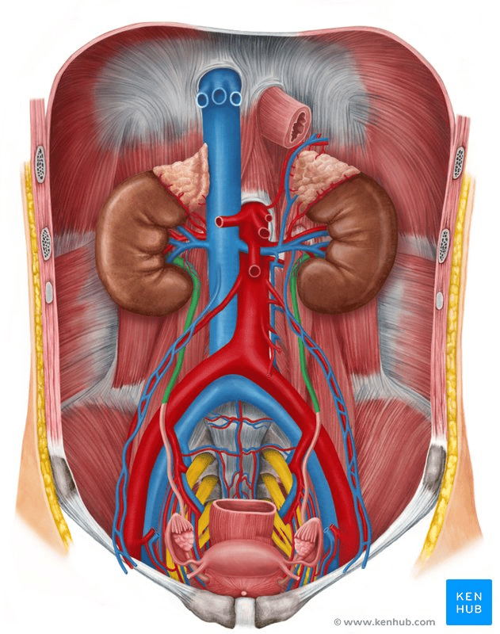
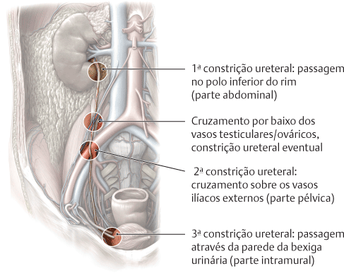
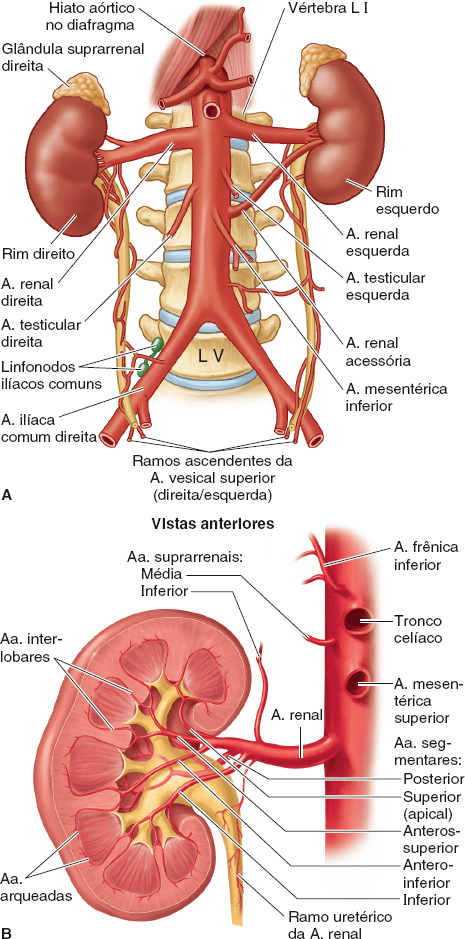
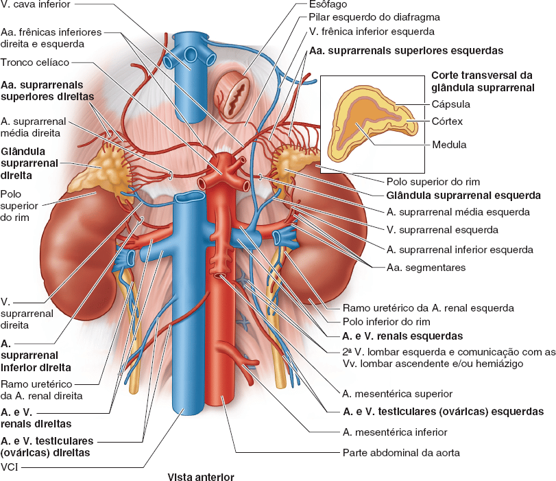
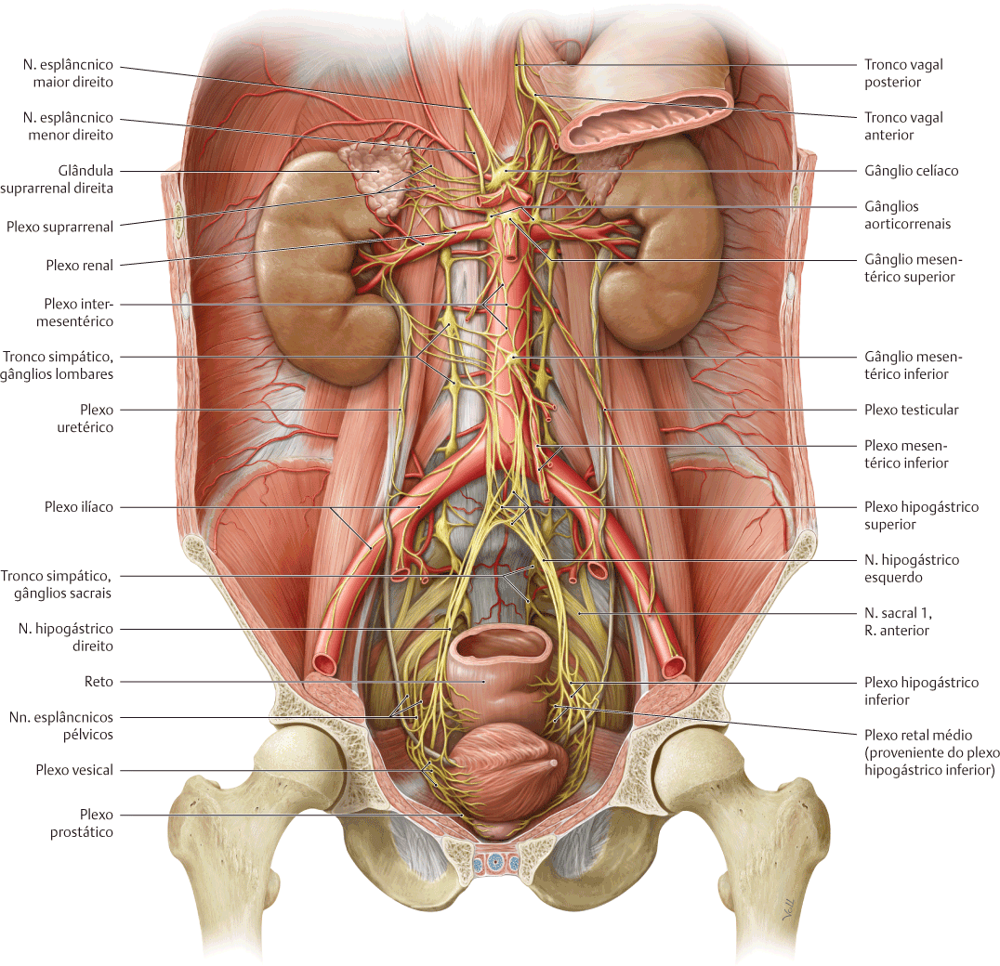
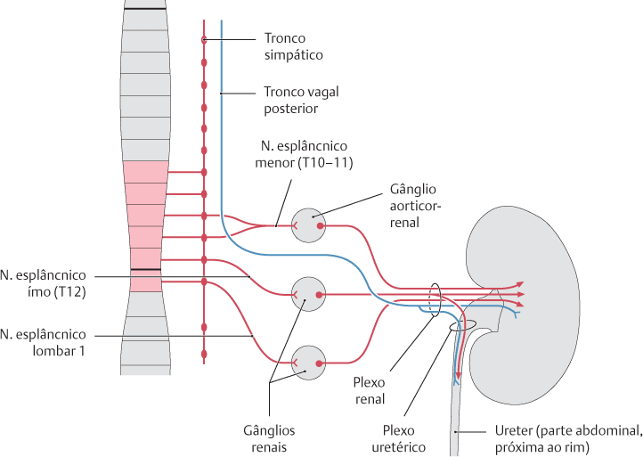
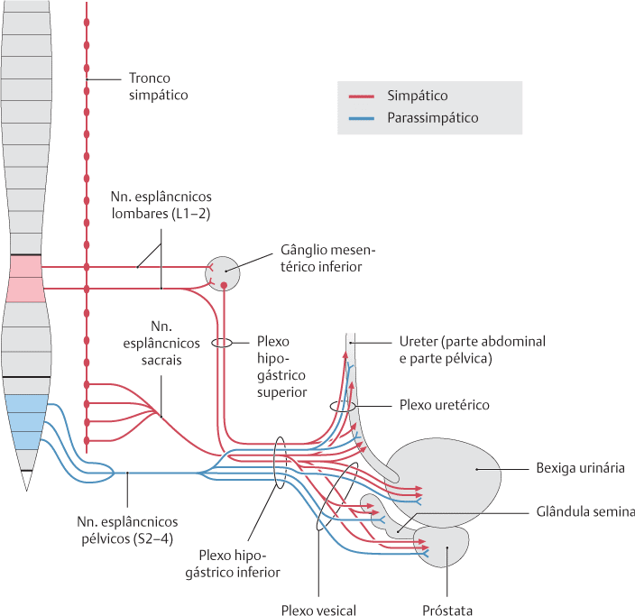
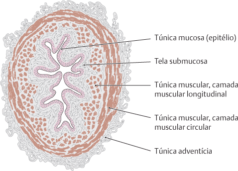
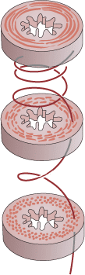
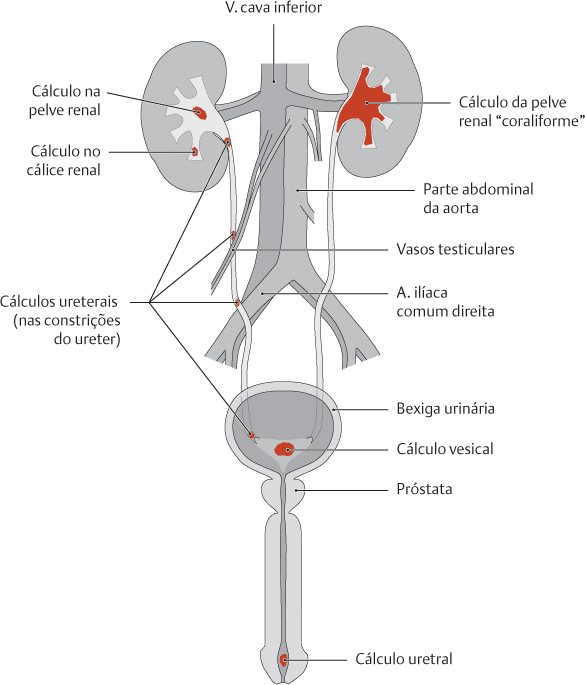

Os ureteres são dois tubos espessos com lúmen estreito que agem para transportar a urina do rim para a bexiga.
Têm aproximadamente de 25 à 30 cm de comprimento e estão situados bilateralmente, com cada ureter drenando um rim.
Surgem no abdome como uma continuação da pelve renal e terminam na cavidade pélvica, onde se esvaziam na bexiga.
O ponto em que a pelve renal se estreita para formar o ureter é conhecido como junção ureteropélvica ou “JUP”.
O curso anatômico dos ureteres pode, portanto, ser dividido em componentes abdominais e pélvicos.
Após o surgimento da junção ureteropélvica, os ureteres descem pelo abdome, ao longo da face anterior do m. psoas maior. Aqui, os ureteres são uma estrutura retroperitoneal (localizada atrás do peritônio).
Na área das articulações sacroilíacas, os ureteres atravessam a borda pélvica, entrando assim na cavidade pélvica.
Nesse ponto, eles também cruzam a bifurcação das artérias ilíacas comuns.

https://www.kenhub.com/
Anatomicamente
Podem ser encontrados em três segmentos:
A parte abdominal (da pelve renal até a linha terminal da pelve / linha arqueada / abertura superior da pelve)
A parte pélvica (da linha terminal até a parede da bexiga urinária) e
A parte intramural (trajeto na parede da bexiga urinária).
Clinicamente
São demarcados de acordo com as áreas características de constrições.
Nesse caso, o limite anatômico entre a parte de trajeto abdominal e a parte de trajeto pélvico não é distinguido:
1ª área de constrição ureteral = Segmento renal do ureter (diretamente do rim);
2ª área de constrição ureteral = Segmento lombar do ureter (entre os rins e a bexiga urinária);
3ª área de constrição ureteral = Segmento vesical do ureter (na parede da bexiga; corresponde à parte intramural anatômica).

SCHUNKE, M. Prometheus, Anatomia geral e sistema locomotor. 4 ed. Rio de Janeiro, Guanabara Koogan, 2019.
Vascularização
O suprimento arterial para os ureteres pode ser dividido em suprimento abdominal e pélvico:
Abdominal – artéria renal; artéria testicular/ovárica e ramos ureterais diretamente da aorta abdominal.
Os ramos aproximam-se dos ureteres medialmente e dividem-se em ramos ascendente e descendente, formando uma anastomose longitudinal na parede do ureter.
Pélvica – artérias vesicais superior e inferior.

MOORE: Keith L. Anatomia orientada para a clínica. 8 ed. Rio de Janeiro: Guanabara Koogan, 2019.
A drenagem venosa é realizada por vasos que correspondem às artérias supracitadas.
Drenam para as veias renais e gonadais (testiculares ou ováricas).

MOORE: Keith L. Anatomia orientada para a clínica. 8 ed. Rio de Janeiro: Guanabara Koogan, 2019.
Inervação
A parte abdominal do ureter recebe fibras simpáticas com origem nos Nn. esplâncnicos menor, ímo e lombar que se conectam com o 2º neurônio, nos gânglios aorticorrenais e renais, respectivamente.
As fibras parassimpáticas originam-se do tronco vagal posterior, bem como dos Nn. esplâncnicos pélvicos.
A parte pélvica do ureter (bem como a uretra) na pelve, recebem fibras simpáticas provenientes dos Nn. esplâncnicos lombares e sacrais, e fibras parassimpáticas provenientes dos Nn. esplâncnicos pélvicos.

SCHUNKE, M. Prometheus, Anatomia geral e sistema locomotor. 4 ed. Rio de Janeiro, Guanabara Koogan, 2019.

SCHUNKE, M. Prometheus, Anatomia geral e sistema locomotor. 4 ed. Rio de Janeiro, Guanabara Koogan, 2019.

SCHUNKE, M. Prometheus, Anatomia geral e sistema locomotor. 4 ed. Rio de Janeiro, Guanabara Koogan, 2019.
Paredes do ureter
O formato estrelado do lúmen do ureter deve-se às pregas de trajeto longitudinal da túnica mucosa.
A túnica mucosa é revestida no ureter e na bexiga urinária por um epitélio de transição de altura variada.
A musculatura lisa, basicamente organizada em duas camadas, encontra-se disposta funcionalmente de forma espiral e é fortemente desenvolvida.
As musculaturas longitudinal e circular do ureter seguem um trajeto levemente oblíquo formando, portanto, um tipo de espiral que transporta a urina em direção à bexiga urinária por meio de contrações peristálticas.
As ondas de contração são controladas principalmente pela parte parassimpática da divisão autônoma do sistema nervoso (N. vago e centros parassimpáticos em S2–4).
Assim, o fluxo de urina do ureter segue em direção à bexiga urinária; desta forma, o refluxo de urina para os rins é impedido.

SCHUNKE, M. Prometheus, Anatomia geral e sistema locomotor. 4 ed. Rio de Janeiro, Guanabara Koogan, 2019.

SCHUNKE, M. Prometheus, Anatomia geral e sistema locomotor. 4 ed. Rio de Janeiro, Guanabara Koogan, 2019.
Constrições do ureter
Existem três locais de constrições consideradas comuns / fisiológicas, onde os cálculos vindos da pelve renal podem ficar presos:
Saída do ureter da pelve renal (“colo do ureter”)
Cruzamento do ureter sobre os vasos ilíacos externos ou comuns
Passagem do ureter através da parede da bexiga urinária.
Ocasionalmente, pode ser distinguida uma 4a constrição no cruzamento do ureter por baixo da A. e V. testiculares ou ováricas.

SCHUNKE, M. Prometheus, Anatomia geral e sistema locomotor. 4 ed. Rio de Janeiro, Guanabara Koogan, 2019.